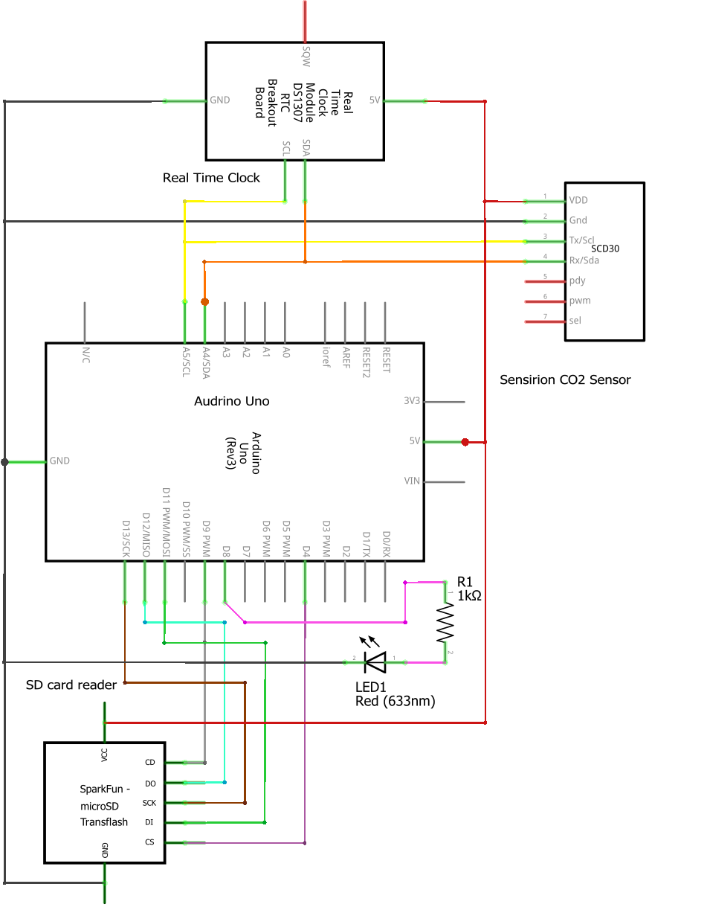
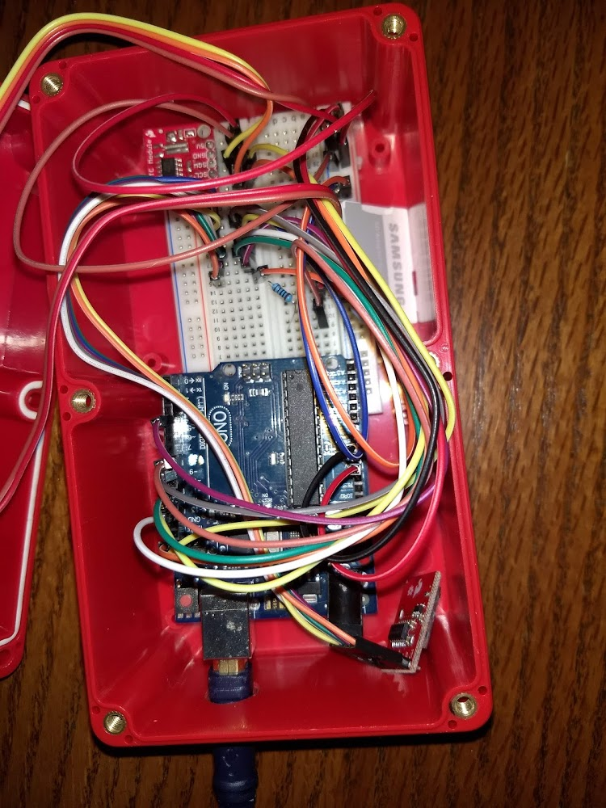

Completed as part of semester long science experiment project in high school.
My experiment was centered around the affects classroom ventilation had on the measured levels of Carbon Dioxide.
Many studies have shown the impact of high CO2 levels on mental performance in the classroom or workplace.
My project involved measuring the levels of CO2 in a classroom over multiple periods, using the time of day and number
of students present per period as independant variables.
In order to take these recordings, I constructed a CO2 measuring and logging device.
Inside a protective box I used an Audrino uno to host C++ code controlling a CO2 measuring module,
a time module, and a sd card module. Because of time constraints a bread-board was used for connecting these components.
The completed system and wiring diagram can be seen below.


Using Audrino C++, the CO2 module was prompted to make recordings every 5 minutes.
These were then stored to a file on the inserted SD card. All recordings were stored along with
accurate times measured from the clock module. A copy of the code can be found here.